リーフ — appears in Chapter 1

・・・みんな・・・
すまない・・・
(→ a conversation follows)
フィン — appears in Chapter 1

リーフ様・・・
お父上の・・・
ご遺志を・・・
オーシン — appears in Chapter 1

く、くそっ・・・
俺としたことが・・・
ハルヴァン — appears in Chapter 1

父さん・・・母さん・・・
すまない・・・
おれまで・・・
エーヴェル — appears in Chapter 1

・・・みんな・・・
いつか・・・きっと・・・
だから、あきらめないで・・・
ダグダ — appears in Chapter 1

さして面白くもねえが
くだらなくもねえ
人生だったな・・・
マーティ — appears in Chapter 1

ちぇっ
ついてねえな・・・
タニア — appears in Chapter 1

そんな・・・
助けて・・・
オーシ・・・
ロナン — appears in Chapter 2
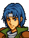
ああ・・・
母さん・・・
サフィ — appears in Chapter 3

・・・神よ！
・・・この世界に・・・
光を・・・
リフィス — appears in Chapter 3
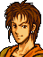
うう・・・
いてえよ・・・
サフィ・・・
ラーラ — appears in Chapter 4
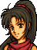
ああっ・・・
次に生まれるときは・・・
もっと・・・
ブライトン — appears in Chapter 4
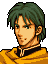
フフ・・・
むかしの・・・
むくいか・・・
フェルグス — appears in Chapter 4
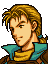
ぐっ・・・
そうそううまくは・・・
いかないものだな・・・
マチュア — appears in Chapter 4
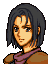
・・・もう一度
・・・豊かなマンスター
・・・見たかった・・・な・・・
カリン — appears in Chapter 4

・・・フュリー様・・・
ごめんなさい・・・
王子様・・・
ダルシン — appears in Chapter 4
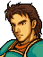
ぐっ、ユベル・・・
姉さんと・・・
仲良く・・・
アスベル — appears in Chapter 4x
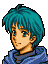
リーフ様・・・
どうか・・・
トラキアを・・・
ナンナ — appears in Chapter 5

・・・リーフさま・・・
負けない・・・で・・・
ヒックス — appears in Chapter 6

・・・マフィー
とにかく・・・無事で・・・
育って・・・ぐふっ
シヴァ — appears in Chapter 7
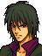
なかなかやるな・・・
ぐふっ
カリオン — appears in Chapter 8
レ、レンスターに・・・
今ひとたび・・・
セルフィナ — appears in Chapter 9
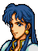
フフ・・・これまで・・・ね・・・
ごめんなさい・・・
グレイド・・・
ケイン — appears in Chapter 9
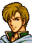
・・・志・・・
いまだ・・・
果たせず・・・
アルバ — appears in Chapter 9
ノヴァの・・・軍旗よ・・・
永遠・・・なれ・・・
ロベルト — appears in Chapter 9
セルフィナ様・・・
もっと・・・
お役に・・・立ちたかった・・・
オルエン — appears in Chapter 11x

く、こんなところで・・・
兄様・・・
フレッド — appears in Chapter 11x

・・・オルエン様・・・
・・・無念・・・です・・・
マリータ — appears in Chapter 12

か、母様・・・くっ・・・
セイラム — appears in Chapter 12x
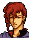
ぐぅ、私の負けか・・・
だが・・・私の・・・
選択に・・・悔いはない・・・
パーン — appears in Chapter 12x
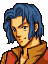
くっ・・・
俺もしょせんは
この程度か・・・
ティナ — appears in Chapter 12x
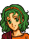
ええっ
な、なんで、あたしが・・・
うそ・・・
トルード — appears in Chapter 12x
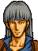
ふっ・・・こんなものか・・・
パーン・・・すまん・・・
グレイド — appears in Chapter 13
この身が・・・くちようと・・・
レンスターは・・・
再び・・・必ず・・・
ディーン — appears in Chapter 14

リノアン・・・
すまない・・・
もう俺は・・・
エダ — appears in Chapter 14
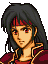
ケイト・・・
ずっと・・・
ありがとう・・・
もういいよ・・・
トラキアへおかえり・・・
ホメロス — appears in Chapter 14
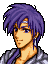
げえっ！
死にたかねえよ・・・
リノアン — appears in Chapter 14x / 15

ああ・・・
ディーン・・・
(→ a conversation follows)
ラルフ — appears in Chapter 15
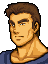
ちっ、これまでか・・・
後はたのんだぜ・・・
イリオス — appears in Chapter 16A
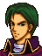
俺はけっきょく
平民のままで終わるのか・・・
スルーフ — appears in Chapter 16A
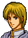
くっ、クロード様・・・
お志を・・・果たせず・・・
申し訳・・・ありません・・・
ミーシャ — appears in Chapter 17A
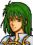
フフ・・・私も・・・
ディートバ母様の・・・
ところへ・・・行くのね・・・
シャナム — appears in Chapter 16B
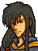
くっ・・・
リーフよ
許せ・・・
サラ — appears in Chapter 16B

・・・さみしい・・・
ミランダ — appears in Chapter 16B

もう一度・・・
あのころに帰れたら・・・
リーフ王子・・・
ゼーベイア — appears in Chapter 18
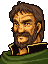
お許しください・・・
リーフ様・・・
わがレンスターに栄光あれ！！
コノモール — appears in Chapter 19
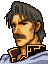
アルスターが・・・
ふたたび・・・
よみがえらんことを・・・
アマルダ — appears in Chapter 19
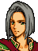
これでいい・・・
血まみれの・・・私には・・・
無様な最期こそふさわしい・・・
デルムッド — appears in Chapter 21
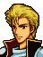
リーフ様・・・
妹を・・・
ナンナをどうか・・・
サイアス — appears in Chapter 23

この傷では戦えない・・・
仕方がない・・・
ひとまずこの場を・・・
セティ — appears in Chapter 23

これまでか・・・
母上・・・フィー・・・
シレジアを・・・たのむ・・・
ガルザス — appears in Chapter 24

ふっ
最後に・・・面白い奴と・・・
出会えた・・・な・・・